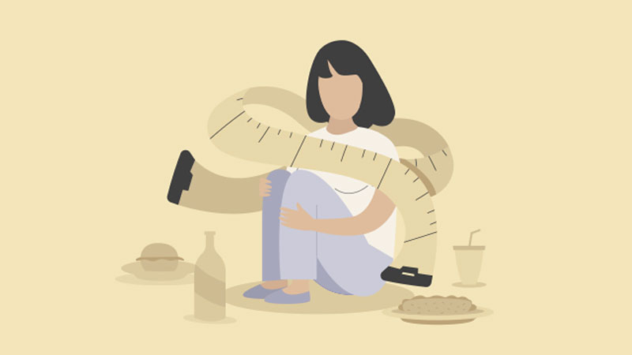
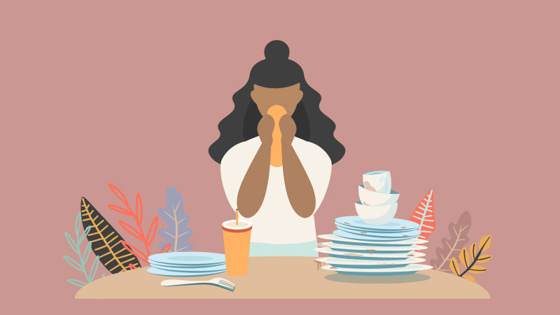
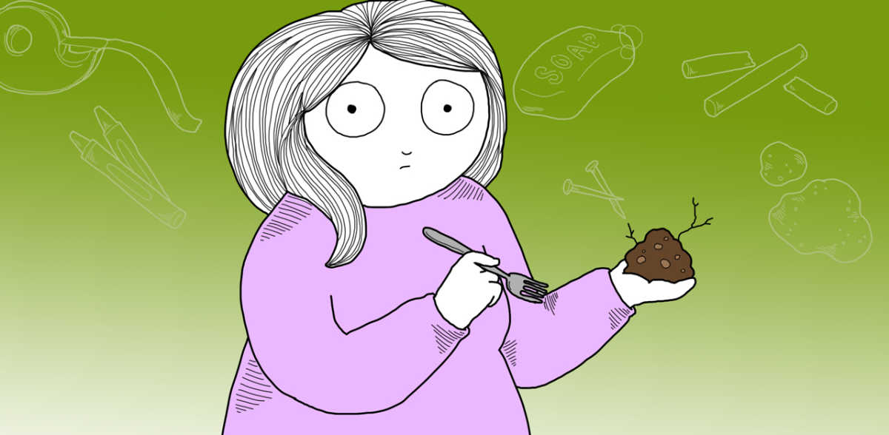
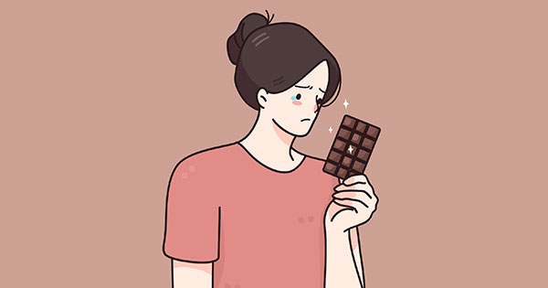

Restricción y reducción de la ingesta nutricional que da como resultado una pérdida de peso significativa.
Esta pérdida de peso puede ser provocada por la alimentación restringida, acompañada de ejercicios físicos intensos o por vómitos y el uso excesivo de diuréticos o laxantes. Se caracteriza por el miedo intenso a ganar peso y por la insatisfacción corporal, o bien, puede ser una conducta persistente que interviene en el aumento de peso.
La Bulimia Nerviosa fácilmente pasa desapercibida. Las personas afectadas presentan una extrema preocupación por la figura y peso.
Tiene muchas similitudes con la bulimia, la diferencia principal es que la persona que sufre un trastorno por atracón no realiza conductas compensatorias. Existe el sentimiento de profunda incomodidad ante el recuerdo de un frenesí alimenticio; a menudo sucede que la persona afectada por este trastorno presenta síntomas depresivos.
Este trastorno se caracteriza por el consumo de sustancias no saludables para el organismo (tales como la arena, el yeso, la tierra, etc). Es muy común que se haga presente durante la infancia, y en algunos casos, es visible en niños con autismo o retraso mental.
Las personas que sufren de vigorexia están tan obsesionadas con verse musculosas que se miran constantemente al espejo y nunca están satisfechas. Además de la obsesión por el deporte, existe también una dieta radical para conseguir los objetivos físicos de la persona. Sin embargo, aquellos afectados por este trastorno, muestran una preocupación por su apariencia física, lo que significa que la actividad física pasa de ser un objetivo saludable a un subidón emocional a la categoría de obsesión.
El trastorno por evitación/restricción de la ingesta de alimentos es un trastorno alimentario en el que las personas afectadas comen muy poco o evitan ciertos alimentos.
Los Trastornos de Conducta Alimentaria No Especificados son cuadros incompletos de trastornos como la Anorexia Nerviosa o Bulimia Nerviosa, ya sea porque estan iniciando o porque se encuentran en proceso de recuperación.